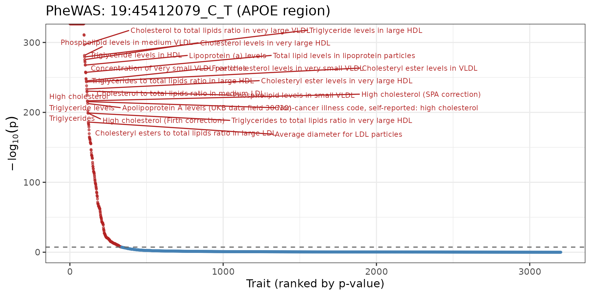
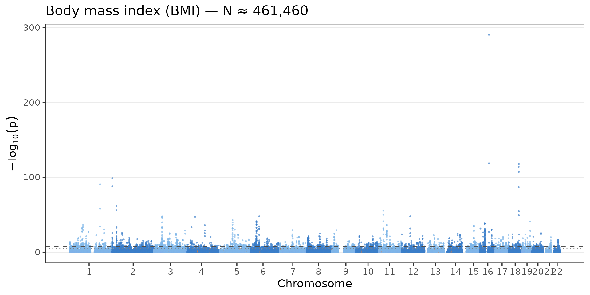
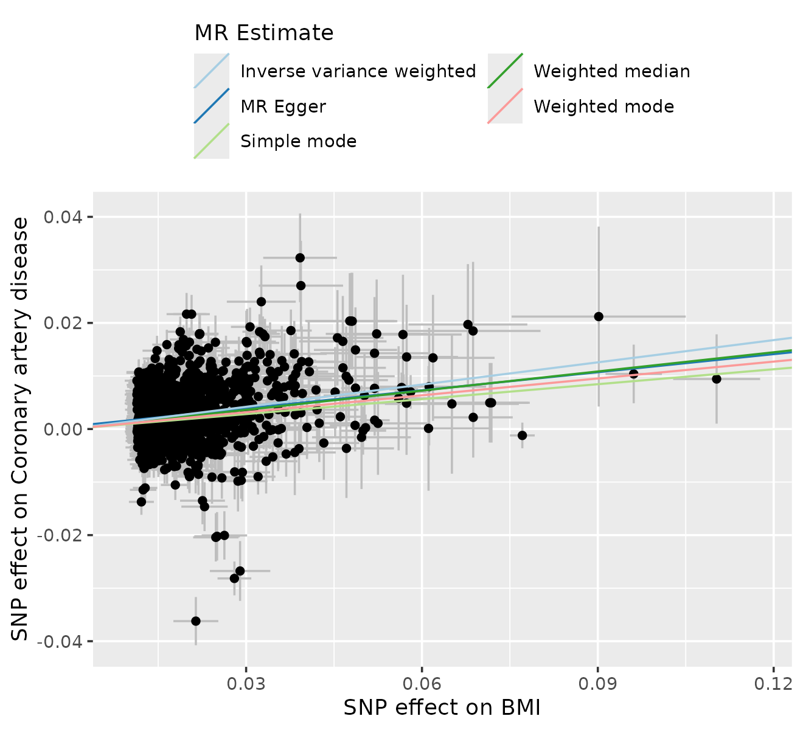
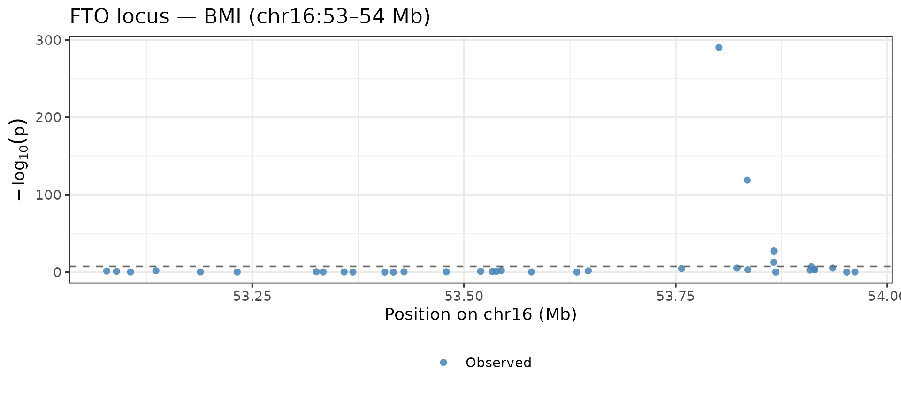

pleiodbr reads .pleiodb databases — compact
binary archives of GWAS z-scores across thousands of traits — directly
from R.
Opening a database
library(pleiodbr)
library(ggplot2)
library(dplyr)
#>
#> Attaching package: 'dplyr'
#> The following objects are masked from 'package:stats':
#>
#> filter, lag
#> The following objects are masked from 'package:base':
#>
#> intersect, setdiff, setequal, union
db <- open_pleiodb("/local-scratch/data/pleiodb/main.pleiodb")
db
#> pleiodb database
#> path: /local-scratch/data/pleiodb/main.pleiodb
#> format version: 3
#> variants (V): 95,378
#> traits (T): 4,159
#> chunk shape: 512×512The connection holds variant and trait tables in memory and reads z-scores on demand from the binary chunks.
Parsing ALIDs
parse_alid() splits ALID strings into chromosome,
position, effect allele, and other allele — useful for building
annotation tables or MR inputs.
parse_alid(c("16:53800954_C_T", "19:45412079_C_T", "2:21231524_T_C"))
#> # A tibble: 3 × 5
#> alid chrom pos ea oa
#> <chr> <chr> <int> <chr> <chr>
#> 1 16:53800954_C_T 16 53800954 C T
#> 2 19:45412079_C_T 19 45412079 C T
#> 3 2:21231524_T_C 2 21231524 T CPheWAS — one variant across all traits
# APOE ε4 proxy: near-perfect LD with rs429358
pw <- phewas(db, "19:45412079_C_T")
nrow(pw)
#> [1] 3203
pw
#> # A tibble: 3,203 × 9
#> variant_id trait_id z beta se pval eaf n imputed
#> <chr> <chr> <dbl> <dbl> <dbl> <dbl> <dbl> <dbl> <lgl>
#> 1 19:45412079_C… ebi-a-G… -6.5 -2.96e-1 0.0455 8.03e-11 0.0796 3.30e3 FALSE
#> 2 19:45412079_C… ebi-a-G… 0.51 4.03e-2 0.0790 6.10e- 1 0.0796 1.09e3 FALSE
#> 3 19:45412079_C… ebi-a-G… 1.89 3.07e-2 0.0163 5.88e- 2 0.0796 2.58e4 FALSE
#> 4 19:45412079_C… ebi-a-G… -0.56 -1.19e-2 0.0212 5.75e- 1 0.0796 1.51e4 FALSE
#> 5 19:45412079_C… ebi-a-G… 1.64 2.98e-2 0.0182 1.01e- 1 0.0796 2.07e4 FALSE
#> 6 19:45412079_C… ebi-a-G… 0.64 8.75e-2 0.137 5.22e- 1 0.0796 3.65e2 FALSE
#> 7 19:45412079_C… ebi-a-G… 0.82 5.47e-2 0.0667 4.12e- 1 0.0796 1.53e3 FALSE
#> 8 19:45412079_C… ebi-a-G… -0.14 -8.69e-4 0.00621 8.89e- 1 0.0796 1.77e5 FALSE
#> 9 19:45412079_C… ebi-a-G… -0.54 -3.35e-3 0.00620 5.89e- 1 0.0796 1.78e5 FALSE
#> 10 19:45412079_C… ebi-a-G… -0.44 -2.73e-3 0.00621 6.60e- 1 0.0796 1.77e5 FALSE
#> # ℹ 3,193 more rowsPheWAS plot
pw_ann <- pw |>
left_join(db$traits[, c("trait_id", "trait_name")], by = "trait_id") |>
arrange(pval) |>
mutate(x = row_number(), log10p = -log10(pval), sig = pval < 5e-8)
top_labels <- pw_ann |> filter(pval < 1e-20)
ggplot(pw_ann, aes(x, log10p, colour = sig)) +
geom_point(size = 0.7, alpha = 0.6) +
geom_hline(yintercept = -log10(5e-8), linetype = "dashed", colour = "grey40") +
ggrepel::geom_text_repel(data = top_labels, aes(label = trait_name),
size = 2.5, max.overlaps = 15) +
scale_colour_manual(values = c("FALSE" = "steelblue", "TRUE" = "firebrick"),
guide = "none") +
labs(x = "Trait (ranked by p-value)", y = expression(-log[10](p)),
title = "PheWAS: 19:45412079_C_T (APOE region)") +
theme_bw(base_size = 11)
GWAS — all variants for one trait
Manhattan plot
manhattan_plot() handles the chromosome offsets,
alternating colours, and optional imputed-variant highlighting
automatically.
manhattan_plot(bmi, title = "Body mass index (BMI) — N ≈ 461,460")
Top hits
hits <- tophits(
db,
traits = c("ukb-b-19953", "ebi-a-GCST006867"),
pval = 5e-8
)
hits |>
left_join(db$traits[, c("trait_id","trait_name")], by = "trait_id") |>
count(trait_name, wt = NULL)
#> # A tibble: 2 × 2
#> trait_name n
#> <chr> <int>
#> 1 Body mass index (BMI) 2077
#> 2 Type 2 diabetes 191Associations — arbitrary variant × trait block
ldl_instruments <- c(
"19:45412079_C_T", # APOE region
"1:55014160_C_T", # PCSK9 region
"2:21870368_A_G" # APOB region
)
assoc <- associations(
db,
variants = ldl_instruments,
traits = c("ebi-a-GCST90018961", # LDL cholesterol
"ebi-a-GCST003116") # Coronary artery disease
)
assoc
#> # A tibble: 6 × 9
#> variant_id trait_id z beta se pval eaf n imputed
#> <chr> <chr> <dbl> <dbl> <dbl> <dbl> <dbl> <dbl> <lgl>
#> 1 19:45412079_… ebi-a-G… -119. -0.526 0.00441 0 0.0796 3.51e5 FALSE
#> 2 1:55014160_C… ebi-a-G… 1.98 0.0127 0.00639 4.77e- 2 0.725 6.14e4 FALSE
#> 3 2:21870368_A… ebi-a-G… 1.94 0.0141 0.00727 5.24e- 2 0.975 3.84e5 FALSE
#> 4 19:45412079_… ebi-a-G… -6.5 -0.296 0.0455 8.03e-11 0.0796 3.30e3 FALSE
#> 5 1:55014160_C… ebi-a-G… -0.38 -0.00966 0.0254 7.04e- 1 0.725 3.88e3 FALSE
#> 6 2:21870368_A… ebi-a-G… 0.61 0.0367 0.0602 5.42e- 1 0.975 5.62e3 FALSEMendelian randomisation: LDL → CAD
to_twosamplemr() converts any pleiodbr result tibble
directly into the format expected by TwoSampleMR.
, “ebi-a-GCST90013864”
exposure <- tophits(db, "ukb-b-19953") |>
to_twosamplemr("exposure", trait_name = "BMI")
outcome <- associations(db, exposure$SNP, "ebi-a-GCST90013864") |>
to_twosamplemr("outcome", trait_name = "Coronary artery disease")
dat <- TwoSampleMR::harmonise_data(exposure, outcome, action = 1)
#> Harmonising BMI (ukb-b-19953) and Coronary artery disease (ebi-a-GCST90013864)
res <- TwoSampleMR::mr(dat)
#> Analysing 'ukb-b-19953' on 'ebi-a-GCST90013864'
res[, c("method", "nsnp", "b", "se", "pval")]
#> method nsnp b se pval
#> 1 MR Egger 2073 0.11363427 0.016539197 8.426264e-12
#> 2 Weighted median 2073 0.12057780 0.006267515 1.761253e-82
#> 3 Inverse variance weighted 2073 0.13969146 0.005267603 5.855651e-155
#> 4 Simple mode 2073 0.09389754 0.036452118 1.006624e-02
#> 5 Weighted mode 2073 0.10590915 0.031809157 8.852135e-04MR scatter plot
TwoSampleMR::mr_scatter_plot(res, dat)
#> $`ukb-b-19953.ebi-a-GCST90013864`
Phenotypic correlation (rho)
library(tidyr)
traits_5 <- c(
"ukb-b-19953", # BMI
"ebi-a-GCST006867", # Type 2 diabetes
"ebi-a-GCST90018961", # LDL cholesterol
"ebi-a-GCST003116", # Coronary artery disease
"ebi-a-GCST90002412" # LDL (larger N)
)
rho_long <- rho(db, traits_5, traits_5)
labels <- db$traits |>
filter(trait_id %in% traits_5) |>
mutate(label = paste0(sub(" \\(.*", "", trait_name), "\n(", trait_id, ")")) |>
select(trait_id, label)
rho_plot <- rho_long |>
left_join(labels, by = c("trait_id_1" = "trait_id")) |> rename(l1 = label) |>
left_join(labels, by = c("trait_id_2" = "trait_id")) |> rename(l2 = label)
ggplot(rho_plot, aes(l1, l2, fill = rho)) +
geom_tile(colour = "white") +
geom_text(aes(label = round(rho, 2)), size = 3) +
scale_fill_gradient2(low = "#4575B4", mid = "white", high = "#D73027",
midpoint = 0, limits = c(-1, 1), name = "ρ") +
labs(x = NULL, y = NULL, title = "Phenotypic correlations") +
theme_bw(base_size = 9) +
theme(axis.text.x = element_text(angle = 30, hjust = 1))Regional locus plot
fto <- phewas(db, "16:53e6-54e6") |>
filter(trait_id == "ukb-b-19953") |>
mutate(pos_mb = as.numeric(sub(".*:(\\d+)_.*", "\\1", variant_id)) / 1e6)
ggplot(fto, aes(pos_mb, -log10(pval), colour = imputed, shape = imputed)) +
geom_point(size = 1.8, alpha = 0.85) +
scale_colour_manual(values = c("FALSE" = "steelblue", "TRUE" = "#E07B39"),
labels = c("Observed", "Imputed")) +
scale_shape_manual(values = c("FALSE" = 16, "TRUE" = 17),
labels = c("Observed", "Imputed")) +
geom_hline(yintercept = -log10(5e-8), linetype = "dashed", colour = "grey40") +
labs(x = "Position on chr16 (Mb)", y = expression(-log[10](p)),
colour = NULL, shape = NULL,
title = "FTO locus — BMI (chr16:53–54 Mb)") +
theme_bw(base_size = 11) +
theme(legend.position = "bottom")